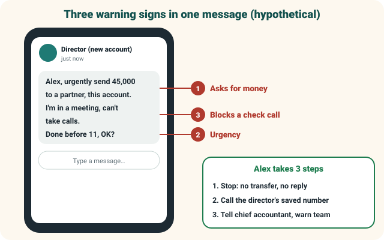

K10 · Digital skills, AI and workplace rules › Level 2 Starting
Spot common scam emails and messages at work
Last updated: 14/11/2026. Scam tricks change all the time. This lesson teaches the common warning signs, not a list of every trick. The lesson is not legal advice.
1. Objectives
- Point out at least 2 warning signs of a scam in a work email or message.
- Handle it in 3 steps: stop, check through another channel, tell the right person.
2. Retrieval warm-up
- What are the three habits for protecting your accounts?
- Why is anyone who asks for your one-time code almost certainly a scammer?
Answers
- Long passwords, a different one for each place; turn on two-step verification; never give your password or one-time code to anyone.
- Because the one-time code is the last key for getting into an account or moving money.
3. Explanation
Scammers usually do not break into computers. They trick people into opening the door themselves: clicking a link, sending a password, transferring money. New employees are easy targets, because they do not know the processes yet and feel shy about asking.
Five common warning signs:
Five warning signs of a scam message
- Urgency"Within 30 minutes", "your account will be locked", "the boss needs it now".
- Asking for secretsPasswords, one-time codes, photos of your ID or bank card.
- Asking for a transfer or new bank detailsEspecially when it skips the normal approval process.
- An address that looks almost rightA domain with an extra letter, a different ending, or one character changed.
- Pretending to be someone you knowA new account, the boss's profile photo, slightly odd wording.
Seeing one sign is enough to stop. Two or more signs almost certainly mean a problem.
Three steps to handle it:
1. Stop 2. Check through another channel 3. Tell the right person
Step 1. Stop. Do not click the link, open the attachment, or reply straight away. The urgency is the trap.
Step 2. Check through another channel. If your boss messages on a chat app, call the number you saved earlier. If "the bank" calls, call the number printed on your card. Never use a number or link from the suspicious message itself. Some countries have an official site for checking websites and reading scam warnings. In Vietnam, for example, there is tinnhiemmang.vn, run by the National Cyber Security Center (checked 14/11/2026).
Step 3. Tell the right person. At work, tell your manager or the IT team, so colleagues are warned in time. If you have already sent a password, report it now and change it. If you have already sent money, call your bank at once, then report it to the police.
Reporting a mistaken click quickly is nothing to be ashamed of. Reporting early limits the damage.
4. Workplace example
Hypothetical scenario. Alex is a new employee in the accounts team of a furniture workshop. He gets a chat message from an account with the director's photo.
"Alex, urgently transfer 45,000 to a partner using this account number. I'm in a meeting and can't take calls. Get it done before 11."
Alex spots 3 signs: urgency, a request to transfer money, and blocking a confirmation call. He does this:
- He does not transfer and does not reply.
- He calls the director's number from the company contact list. The director says he sent no message.
- He tells the chief accountant, and posts a screenshot in the internal group to warn others.

Why this works: Alex checks using a number he already had, not a channel from the message. He reports it so others do not fall for it.
5. Practice
Hypothetical scenario. You are an intern at a travel company. You get an email: "Your mailbox is almost full. Click here within 24 hours to keep your emails." The sender is "IT Suport", with an unfamiliar address that is not the company's domain.
Point out the warning signs, then write what you do in 3 steps.
Hint 1
Look at the deadline, the sender's address, and what they want you to do.
Model answer
Signs: urgency (24 hours); the address is not the company's domain; it asks you to click a link.
- Stop: do not click the link.
- Check: ask IT on the internal phone number, or in person.
- Report: forward the email to IT as the company instructs, then delete it.
6. Self-check
Choose an answer. Every option has an explanation.
Question 1. Which message has the most warning signs of a scam?
-
Not quite. A normal message. It asks for nothing secret and is not urgent.
-
Correct. Correct. There are 2 clear signs: urgency, and asking for a one-time code.
-
Not quite. This is an ordinary reminder with no warning signs.
Question 2. Your boss messages on a chat app asking for an urgent transfer. What is the right way to check?
-
Not quite. An impostor will answer "yes". You must check through another channel.
-
Correct. Correct. Check through another channel, not the one in the suspicious message.
-
Not quite. The number in the message may belong to the scammer.
Question 3. You clicked a link by mistake and typed in your company email password. What do you do?
-
Not quite. Hiding it gives the criminal more time to use your account.
-
Correct. Correct. Reporting early and changing the password limit the damage.
-
Not quite. Waiting can let someone take data or take over the account.
Question 4. Why report a scam message even if you were not tricked?
-
Not quite. The aim is to protect colleagues, not to be praised.
-
Correct. Correct. Scammers often send the same message to many people in one company.
-
Not quite. Others may not have noticed. Reporting makes the whole company safer.
7. Reflection
- Have you ever received a message that looked like a scam? Which signs did it have?
- At your workplace or school, who do you tell when you suspect a scam?
8. Real-world application
Over the next 7 days, save the real phone numbers of your manager and your bank's helpline in your contacts. Ask at work: if we suspect a scam, who do we tell, and how? Write the answer in your notebook.
9. Metadata
| skill | K10 · Digital skills, AI and workplace rules |
|---|---|
| level | Level 2 · Starting |
| group | N2, N3 |
| framework_map | WEF: Technological literacy; Networks and cybersecurity; CSfW: 3e Work in a digital world; SkillsFuture CCS: Digital Fluency; DigComp 3.0 (reference only) |
| original | Vietnamese version |
| updated | 2026-11-14 |
Finish the lesson
Mark it as done and the site suggests reviews after 1, 3 and 7 days. The data stays on your device only.
Suggested reviews: